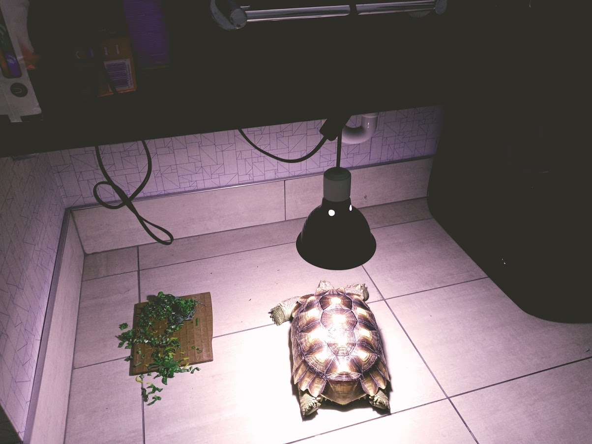

I have a pet tortoise. He is a male African Spurred Tortoise, also known as a Sulcata Tortoise
He is very cute! I got him as a baby. He was very small and fit in the palm of my hand. Now he is way too big to fit! Sulcata Tortoises can live over 50 years!
It took some time to learn how to take care of Hiccup properly. Here is a list of things he can eat:
Hiccup is very cute. That being said he is very smelly! He lives mostly in his room, going outside when it is warm and/or cool enough.
At least once a week I have to scrub the floors in his room. I also have to change the water in his swimming pool that is outside.
I had to grow grass in the desert for him. This means I have to keep it watered sometimes twice a day!
Hiccup is a lot of work, but, I love him so I don't mind!
Getting a Sulcata is a huge commitment. I wouldn't recomment it to someone with little time.
Thank you for coming to learn about Hiccup.
